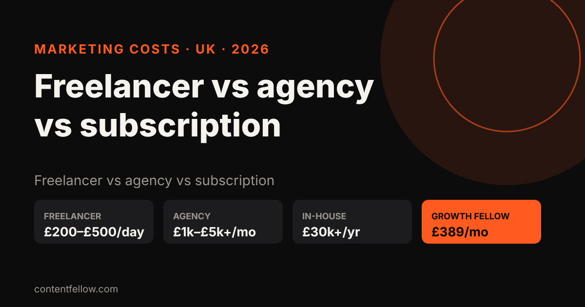
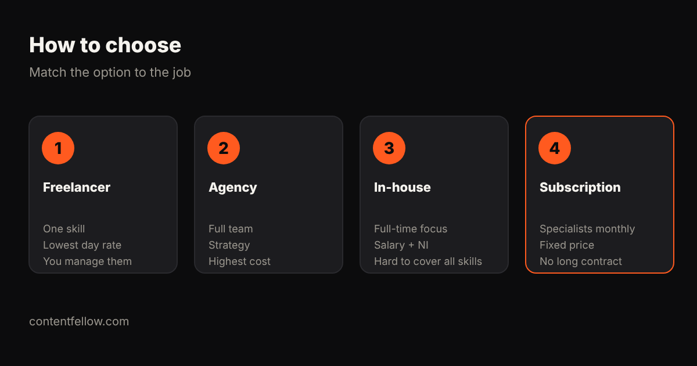

Is It Cheaper to Hire a Freelancer or an Agency for Marketing? UK Costs 2026
Is it cheaper to hire a freelancer or an agency for marketing?
Quick answer: For one skill, a freelancer is usually cheaper than an agency: UK marketing freelancers typically charge £200–£500 a day, while small-business agency retainers usually start around £1,000–£5,000 a month. But if you need several skills (video, social, website and SEO), hiring separate freelancers adds up and you become the project manager, so a full-service agency or a marketing subscription can work out cheaper per skill. ContentFellow's Growth Fellow covers all five for £389 a month. (Updated October 2026.)
TL;DR: One job, one skill: freelancer. Strategy plus lots of channels and a big budget: agency. Several skills on a small budget without managing four people: subscription.

UK cost comparison (2026)
| Option | Typical UK cost | Good for | Watch out for |
|---|---|---|---|
| Freelancer | £25–£75 per hour, £200–£500 per day | One clear task or skill | Availability, holidays, you manage them |
| Several freelancers | £1,000–£3,000+ a month combined | Covering video, social, web, SEO | Coordination, mixed quality |
| Agency retainer | £1,000–£5,000+ a month | Strategy, campaigns, larger budgets | Minimum terms (often 6–12 months) |
| In-house marketer | £28,000–£40,000 salary plus employer NI and pension | Full-time focus | One person rarely covers every skill |
| Marketing subscription | £59–£389 a month at ContentFellow | Small businesses wanting specialists monthly | Set monthly scope |
Ranges are typical quotes from UK freelancer platforms, agency price pages and job listings checked in October 2026.

When a freelancer is cheaper
- You need one thing done well: a logo, a website refresh, a batch of videos.
- You have time to brief, review and chase.
- You already know your strategy.
When an agency is worth it
- You have a budget of a few thousand pounds a month.
- You need strategy, campaigns and reporting across many channels.
- You want one accountable team.
The middle option: a marketing subscription
A subscription gives you specialists for a fixed monthly price, without hiring or a long contract. At ContentFellow you pick Fellows: Social Fellow £59, Build Fellow £69, Search Fellow £89, Creator Fellow £119, Studio Fellow £149, or all five in Growth Fellow for £389 a month (save £166). You approve everything before it goes live, and can add or drop Fellows from next month.
Compare: outsourced marketing team costs and all-in-one marketing for UK small businesses.
Questions to ask whichever you choose
- What exactly is included each month?
- What is the minimum contract and notice period?
- Who owns the website, accounts and files?
- How do you report results?
- Is VAT on top? (ContentFellow isn't VAT registered, so prices are the full amount.)
Frequently asked questions
Is it cheaper to hire a freelancer or an agency for marketing?
For a single skill, a freelancer is usually cheaper. For several skills at once, an agency or a marketing subscription can cost less than hiring and managing multiple freelancers.
How much does a marketing freelancer cost in the UK?
Typically £25 to £75 an hour or £200 to £500 a day, depending on skill and experience.
How much does a marketing agency cost per month in the UK?
Small-business retainers usually start around £1,000 and can go well beyond £5,000 a month.
What is a marketing subscription?
A fixed monthly plan that gives you set marketing work from specialists, such as social media, video or SEO, without a long contract.
Can I try ContentFellow before paying?
Yes. Several Fellows start with a free trial, such as 3 free videos with the Creator Fellow.
See all services and prices → · More quick answers on our answers page. Want a site you own? See development packages and website care plans.
Sources: ContentFellow plans and prices from contentfellow.com/pricing/ (October 2026); market ranges are typical quotes from UK freelancer marketplaces and agency price pages checked October 2026. Prices include everything: ContentFellow is not VAT registered. Last updated 19 October 2026.